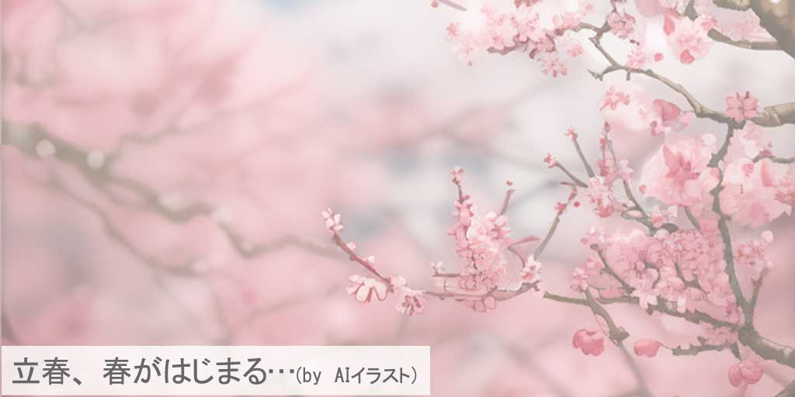
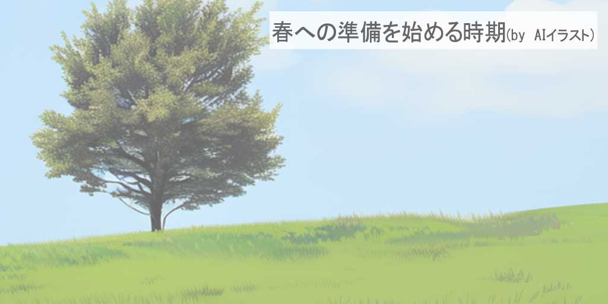
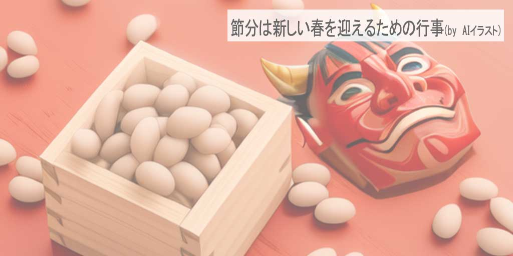
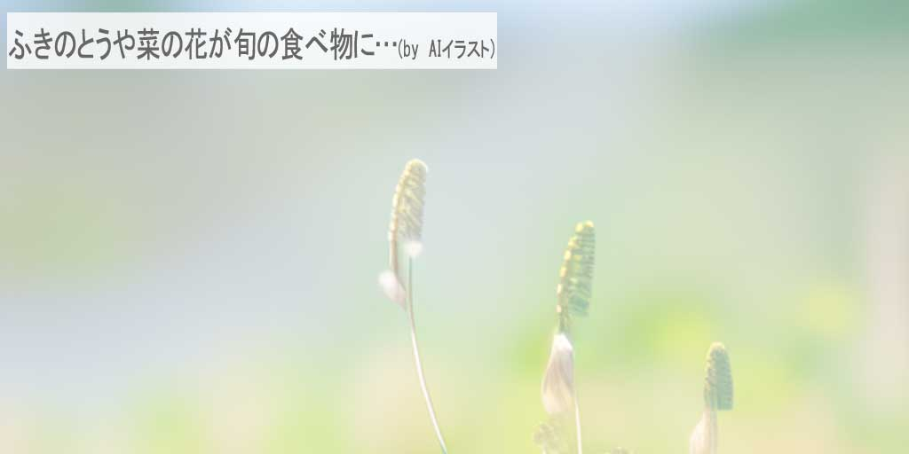
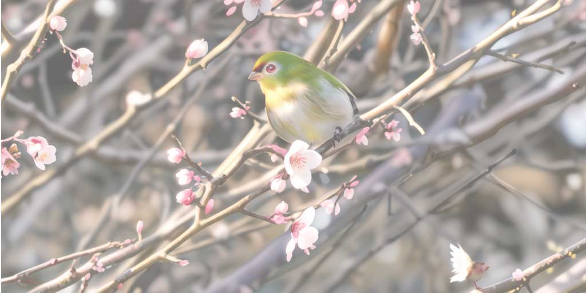
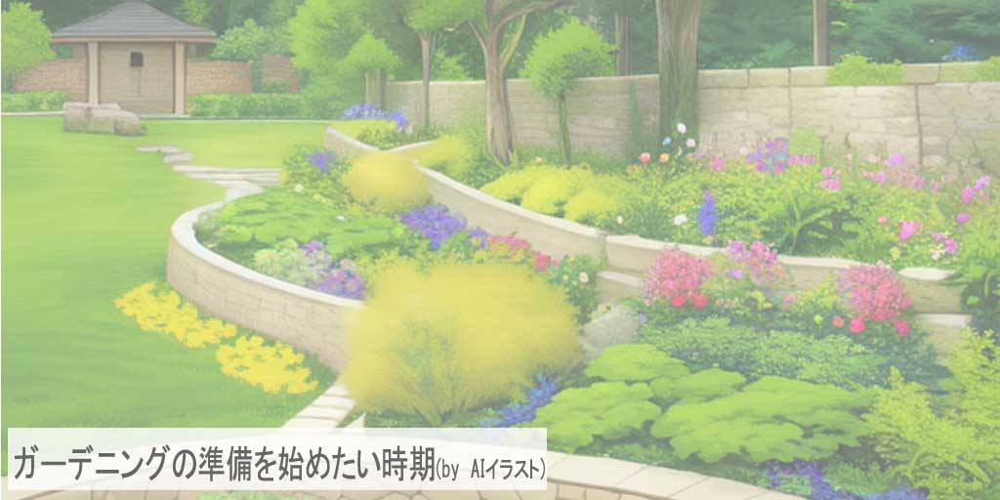
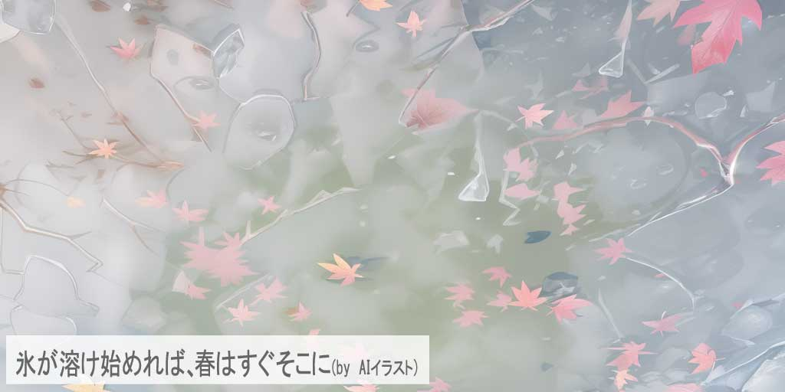
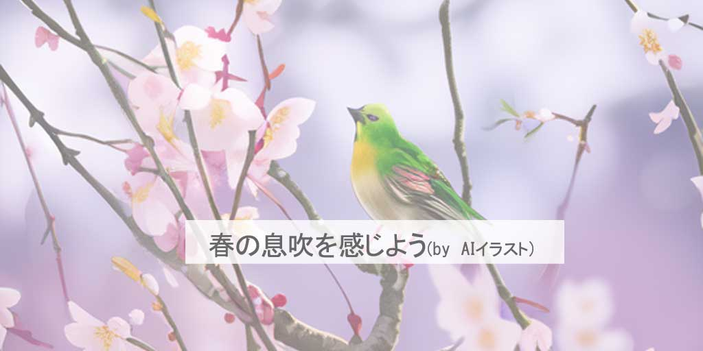

立春（りっしゅん）の訪れ：新たな季節の幕開け
春の息吹がほのかに感じられる「立春」。この古くから続く節気は、二十四節気の始まりをお知らせする節気です。旧暦においては、新年の始まりと自然の目覚めを告げる日でした。現代でも春の始まりとして、私たちのカレンダーに刻まれています。
この記事では、立春が日本の風土や文化にどのように根付いているのか、また、立春に関連する風習や季節の食べ物、健康管理の方法まで、さまざまな角度からその魅力を解き明かしていきます。立春の深い意味を理解することで、私たちは季節の変わり目をより豊かに、そして意識的に楽しむことができるのです。
立春（りっしゅん）の歴史とその意義：古来からの教え
立春は、冬の寒さが和らぎ、新たな生命の息吹を予感させる節気です。その起源は古代中国にまで遡り、五行思想に基づいて季節の変動を捉える重要な指標とされていました。日本へは、中国の暦とともに伝来し、自然崇拝の精神と融合しながら、農耕文化の根幹をなす行事として位置づけられました。
立春は、「春が立つ」という意味を持ち、この日を境に新たな年の計画を立て、作物の種まき準備を始める時期とされてきました。今日では、立春を迎えることで、心新たに一年をスタートさせる契機と捉える人々も多いのです。
この節気は、過去と現在をつなぐ架け橋として、私たちの暮らしに根づいた風習として、今も尊重され続けています。
春を迎える風習：立春（りっしゅん）の伝統行事
日本において立春は、春を迎えるための様々な風習が存在する特別な時期です。代表的なのは、節分と密接に結びついた「豆まき」行事です。節分の日に鬼は外、福は内と唱えながら豆をまくことで、厄払いと幸福の招来を願います。この風習は、家族が一緒に行う楽しいイベントであり、子供たちにも大人気です。
別の風習として、「立春大吉」の文字を書いた縁起物を家に飾る習慣もあります。これは一年の始まりに良い運気を呼び込むためのもので、家庭や職場で見られることが多いです。また、立春には新しい衣服を身に着ける「初春の装い」という習慣もあり、新たなスタートを象徴するものとされています。
立春に食べる特定の食べ物にも注目が集まります。例えば、立春の日には春の七草粥を食べることがあり、これは五穀豊穣や健康を願う意味が込められています。この粥には、春の訪れを告げる七種の野草が使われ、自然との繋がりを感じさせる食事となっています。
これらの風習は、日本の文化の中で受け継がれてきた重要な要素であり、立春の時期をより意義深いものにしています。現代でも、これらの伝統的な行事や習慣を通じて、春の訪れを心から祝福する慣わしが大切にされています。
立春（りっしゅん）に味わうべき食材：季節を彩る味覚
立春は、日本の食文化においても特別な意味を持ちます。この時期には、旬の食材を使った料理が多く登場し、春の訪れを祝います。立春に特有の食材の一つが「春キャベツ」です。春キャベツは冬の終わりから春にかけて収穫され、柔らかく甘い味わいが特徴です。シンプルなサラダや炒め物として楽しむのが一般的ですが、そのまま楽しむことで、春の訪れを感じることができます。
また、立春には「菜の花」を食べる風習もあります。菜の花は、春の訪れを告げる象徴的な食材で、ビタミンやミネラルが豊富に含まれています。塩茹でしておひたしにするのが一般的ですが、パスタやサラダに混ぜても美味しくいただけます。
春の海の幸としては、「ワカメ」が挙げられます。ワカメはこの時期が旬で、栄養価が高く、体を温める効果があります。和え物やスープ、サラダなど様々な料理に用いられ、春の食卓を豊かに彩ります。
これらの食材は、立春の時期に日本各地で楽しまれ、季節の変わり目を味わうための重要な要素となっています。これらを使った料理は、立春の日の特別な食事として、また日々の健康を支える栄養豊富な食事として、楽しむことができるでしょう。
立春（りっしゅん）を健やかに：季節の変わり目のウェルネス
立春は、春の訪れとともに新たな始まりを迎える節気です。この季節の変わり目は、私たちの健康にとっても重要な時期であり、適切なケアが必要です。冬から春への移行期には、体調を崩しやすいため、体温調節や免疫力の維持が特に重要になります。
この時期には、暖かくなり始める天候に合わせて衣服の調整が必要です。急激な温度変化による体調不良を防ぐため、レイヤーを活用して体温調節をしましょう。また、季節の変わり目はアレルギー反応を引き起こしやすいため、アレルギー予防にも注意が必要です。
春の訪れは、新鮮な空気と光を楽しむ絶好の機会です。春の暖かな日差しを浴びることで、ビタミンDの生成を促し、心身の健康を保つことができます。ウォーキングや軽いジョギングなどの屋外活動は、新鮮な空気を吸い込みながら体を動かすのに最適です。
立春の時期は、新たなスタートに向けた心の準備をするのにも適しています。春の訪れと共に、新しい活動や趣味を始めることで、心に新鮮な刺激を与え、ポジティブなエネルギーを得ることができます。
このセクションでは、立春の時期に特に注意すべき健康管理とウェルネスに関するヒントを提供しました。季節の変わり目を健やかに過ごすために、これらのアドバイスを活用して、春の訪れを心地よく迎えましょう。
立春（りっしゅん）の自然と暮らし：季節の変化を楽しむ
立春の訪れは、自然界の目覚めと共に暮らし方にも変化をもたらします。この節気は、寒さから徐々に解放され、生きとし生けるものが新たな生命の息吹を感じ始める時期です。日の出が早くなり、日中の光も増え、自然は徐々に春の訪れを告げています。
立春を迎えると、庭や公園では早咲きの花々が色鮮やかに咲き始めます。梅の花が開花し、カンザクラや福寿草なども姿を見せるようになります。これらの花々は、冬の終わりと春の訪れを象徴し、私たちに暖かい季節が近づいていることを教えてくれます。
この時期は、ガーデニングを始めるのにも最適です。冬の間に休眠していた植物たちが目覚め始め、新しい芽を出す準備をします。庭の手入れを始めることで、自然との一体感を感じ、心を癒やすことができます。
また、立春は、新年度に向けての準備を始める良い機会でもあります。春の訪れを感じながら、新しい計画を立てたり、新しい目標に向かって歩み始めたりするのに適した時期です。自然の変化に合わせて、生活のリズムも少しずつ変えていくことが大切です。
このセクションでは、立春の自然の変化とそれに合わせた生活の仕方について紹介しました。春の訪れと共に、自然とのつながりを感じながら、新たな季節を心地よく迎え入れましょう。
現代に息づく立春（りっしゅん）：伝統を紡ぐ私たち
立春は、単に季節の変わり目を示す古い暦の一部ではありません。現代社会でも、この節気は新しい始まりの象徴として、私たちに多くの意味をもたらしています。立春は、過去を振り返り、新しい年の目標を設定する機会を提供します。それは、春の訪れと共に新たなエネルギーと希望をもたらし、個人の再生と成長を象徴しています。
また、立春は私たちに自然界とのつながりを再認識させます。季節の変化を感じ取り、それに応じて生活を調整することは、現代の忙しい生活の中でしばしば忘れがちな、大切な習慣です。立春を迎えることは、自然界のリズムとの調和を取り戻す絶好の機会と言えるでしょう。
現代における立春は、私たちの生活に春の喜びと生命力をもたらします。この時期には、古来の風習や行事を現代的に解釈し、新たな形で楽しむことも可能です。立春は、春の訪れを祝う伝統的な意味合いを保ちつつ、現代的な価値を見出し、私たち自身の生活に取り入れています。
まとめ：立春（りっしゅん）の奥深き魅力：新春を心豊かに
この記事を通じて、立春が持つ多面的な魅力を探求してきました。立春は、冬の終わりと新しい春の始まりを告げる重要な節気です。この時期には、自然界の変化を感じ取り、新年度に向けての準備を行うことができます。立春の風習や行事、旬の食べ物、そして季節の変化に合わせた健康とウェルネスのアドバイスは、新しい季節を迎える上で役立つことでしょう。
現代においても、立春は私たちの生活に深く根付いています。伝統を受け継ぎながら、新たな解釈を加えて、それを現代的な形で楽しむことができます。立春を通じて、生命の息吹と新しい始まりの喜びを感じ、心豊かな春を迎えましょう。